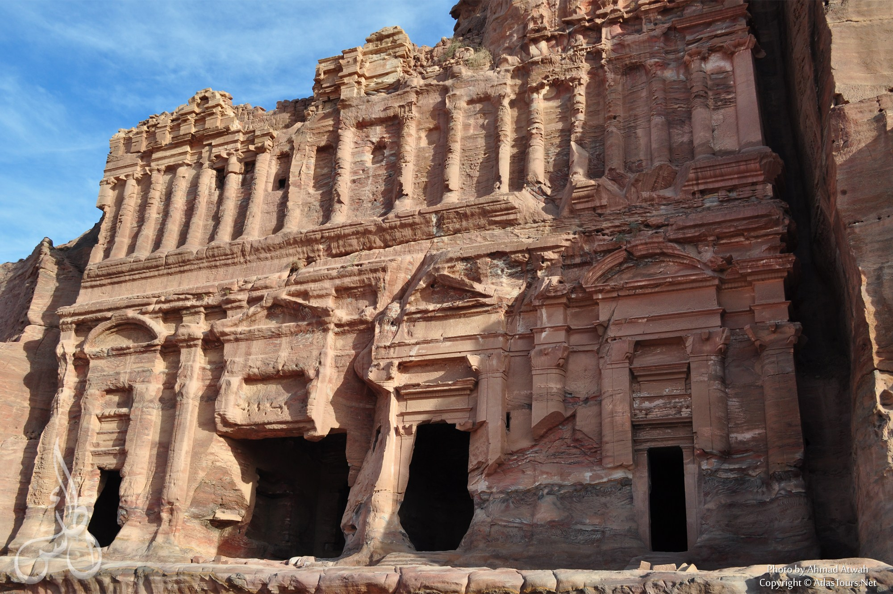
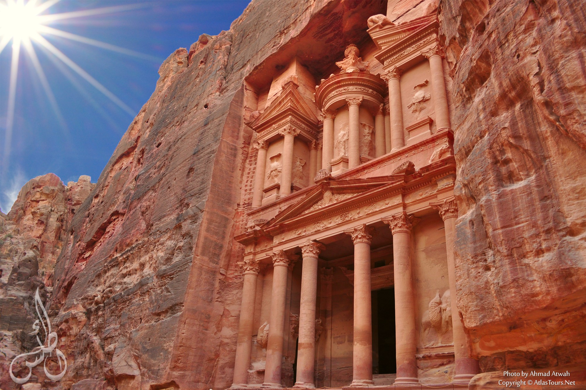

Petra (Arabic: البتراء, Al-Batrāʾ; Ancient Greek: Πέτρα), originally known to the Nabataeans as Raqmu, is a historical and archaeological city in southern Jordan. The city is famous for its rock-cut architecture and water conduit system. Another name for Petra is the Rose City due to the color of the stone out of which it is carved. Petra is one of the New7Wonders of the World.